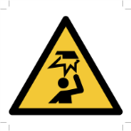
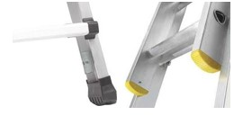
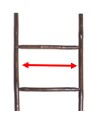
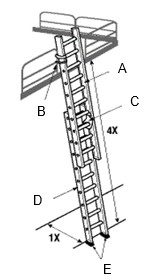
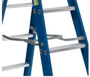
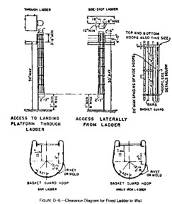

Ladder Inspection Checklist
Purpose and Application
Purpose
To define a work instruction for the inspection of portable and fixed ladders on a semi-annual basis.
On a semi-annual basis all ladders (portable and fixed) shall be inspected by a qualified person, ladder user, or designated/authorized person.
Application
This procedure applies to all Space employees, contractors and visitors, and all operations including manufacturing facilities, laboratories, R&D facilities, technical centers, offices, and administrative buildings where ladders and portable stairs are used.
Safety
 |
 |
 |
 |
 |
Instructions
- The following visual checks shall be made on portable and fixed ladders:
- Inspect each portable and fixed ladder for the following:
- Broken or loose members.
- All joints between steps and side rails are tight.
- All hardware and fittings securely attached.
- All moveable parts operate freely without binding or undue play.
- Side rail dents, bends or excessively dented rungs.
- Fiberglass ladders shall be check for splinters and cracks.
- Other faults.

- Check that all rivets are in good condition:
- Free from rust.
- Not loose.
- Check for missing rivet heads.
- All shafts are intact.
-
The image in the right hand column shows an intact rivet head but the shaft has cut through.

-
The image in the right hand column shows an intact rivet head but the shaft has cut through.
- Non-slip feet are present and not cracked. 
- Check that all rungs are unpainted and free of grease and oil.
- Paint or other coatings on ladders may prevent defects from being visible during inspection.
- Steps, rungs, cleats, broken side rails and all other sections of the ladder shall be kept free of dirt, grease and oil.
- Rungs spaced one foot apart.
- All rungs shall have a minimum diameter of three-fourths inch for metal ladders.
- The distance between rungs, cleats, and steps shall not exceed 300 mm (12 inch)
and shall be uniform throughout the length of the ladder.

- Side rails a minimum of 300 mm (12 inch). 
- Extension ladder rope in good condition and have all of the following:
- Polymer end caps
- External guides at top of base section
- Heavy duty pulley and rope
- Full length interlocking side rails
- Slip-resistant D-rungs
- Aluminum locks
- Heavy cast aluminum shoe assembly
- Rope meets manufacturer’s spec

- Extension ladders not separated
- Tie-Off
- Fly (Upper Section)
- Extension Lock
- Base (Lower Section)
- Non-Slip Feet 
- Spreader arms not bent or broken
- A metal spreader or locking device of sufficient size and strength to securely
hold the front and back sections in the open position shall be a
component of each stepladder. The spreader shall have all sharp points or
edges covered or removed to protect the user. 
- A metal spreader or locking device of sufficient size and strength to securely
hold the front and back sections in the open position shall be a
component of each stepladder. The spreader shall have all sharp points or
edges covered or removed to protect the user.
- Maximum length of ladder (measured by side rail) shall not be more than:
- Step ladder – 20’
- Single ladder – 30’
- Extension ladder (2-piece) – 50’
- Extension ladder (3+ pieces) – 60’
- Fixed ladders are secured to the structure
- The preferred pitch of fixed ladders shall fall within the range of 75 degrees and 90 degrees with the horizontal.
- Fixed ladders shall be considered as substandard if they are installed within the substandard pitch range of 60 and 75 degrees with the horizontal. Substandard fixed ladders are permitted only where it is found necessary to meet conditions of installation.
- Ladders having a pitch in excess of 90 degrees with the horizontal are
prohibited.

- Cages are undamaged on fixed ladders requiring them
- Cages shall be provided on ladders of more than 6 meters (20 feet) to a maximum unbroken length of 9 meters (30 feet).
- Cages shall extend a minimum of 1 meter (42 inches) above the top of the landing, unless other acceptable protection is provided.
- Cages shall extend down the ladder to a point not less than 2 meters (7 feet) nor more than 2.5 meters (8 feet) above the base of the ladder, with bottom flared not less than 100 mm (4 inches), or portion of cage opposite ladder shall be carried to the base.
- Cages shall not be less than 690 mm (27 inches) in width.
- Insides of cage are clear of projections.
- Vertical bars are located at a maximum spacing of 40 degrees around the
circumference of the cage. 
- Inspect each portable and fixed ladder for the following:
Required Training
Before performing this work instruction, applicable personnel must be trained by an authorized trainer on the required training contents listed in this document.
Approval
|
Region |
Representative |
|---|---|
|
Asia Pacific |
Steve Bourke |
|
Europe |
Tim Neal |
|
Latin America |
Isabela Malpighi |
|
North America |
Ken Smigielski |
|
Global Operations |
Jim Joyce, V P |
Revision History
| 2016-04-20 |
Approved by Jim Joyce, EHS V P Original Issue |